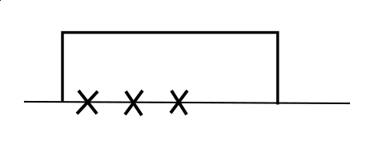
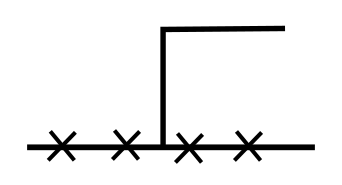

Markov Duality
markov_processes duality
Definition. Markov processes \(X\) and \(Y\) are dual with respect to function \(H\) if
\[ \expe_{X_0 = x} H(X_t, y) = \expe_{Y_0 = y} H(x, Y_t). \]When \(X\) and \(Y\) have generator \(L^X\) and \(L^Y\), this is equivalent to
\[ L^X H(x, y) = L^Y H(x, y). \]This equivalence can be seen by taking \(\partial_t|_{t = 0}\) and noting the initial condition is tautology (\(H(x, y) = H(x, y)\)).
We derive the duality between \(q\)-TASEP and \(q\)-TAZRP, and between ASEP occupation and location processes. These results can be found in e.g. [{borodin-corwin-sasamoto14}].
duality between \(q\)-TASEP and \(q\)-TAZRP
qTASEP qTAZRP duality
Let \(X\) be \(q\)-TASEP with \(N\) particles, and \(Y\) be \(q\)-TAZRP with \(N\) sites. More specifically, \(X_k\) is the location of \(k\)th particle of \(q\)-TASEP and \(Y_k\) is the number of particles at site \(k\). Let \(a_i\) be the rate of jumps by the \(i\)th particle in \(q\)-TASEP, and of from site \(i\) to site \(i - 1\) in \(q\)-TAZRP.
The generator of \(q\)-TASEP is
\[ L^X f(x) = \sum_i a_i (1 - q^{x_{i - 1} - x_i - 1}) (f(x + e_i) - f(x)) \]and that of \(q\)-TAZRP is
\[ L^Y f(x) = \sum_i a_i (1 - q^{y_i}) (f(y - e_i + e_{i - 1}) - f(y)) \]Let
\[ H(x, y) = \prod_{i = 1 : N} q^{(x_i + i) y_i}. \]Claim. \(X\) and \(Y\) are dual w.r.t. \(H\).
Proof.
\[ L^X H(x, y) = \sum_i a_i (1 - q^{x_{i - 1} - x_i - 1}) (q^{y_i} - 1) H(x, y) = L^Y (x, y). \]\(\square\).
duality between ASEP occupation and location processes
ASEP duality
Let \(\eta\) be the occupation process of ASEP with rate \(p\) to the right and \(q\) to the left:
\[ L^\eta f(\eta) = \sum_i p \eta_i (1 - \eta_{i + 1}) (f(\eta - e_i + e_{i + 1}) - f(\eta)) + q (1 - \eta_i) \eta_{i + 1} (f(\eta - e_{i + 1} + e_i) - f(\eta)). \]and \(X\) be the location process of ASEP with rate \(p\) to the left and \(q\) to the right:
\[ L^X f(x) = \sum_{i \in l(x)} p (f(x - e_i) - f(x)) + \sum_{i \in r(x)} q (f(x + e_i) - f(x)), \]where \(l(x) = \{i : x_{i - 1} + 1 < x_i\}\) and \(r(x) = \{i : x_i + 1 < x_{i + 1}\}\) are the left and right edges of clusters.
Let
\begin{align} \tau &= p / q\\ N_x (\eta) &= \sum_{i \le x} \eta_i\\ H(\eta, x) &= \prod_i \tau^{N_{x_i} (\eta)} \qquad (1) \\ G(\eta, x) &= \prod_i \tau^{N_{x_i - 1} (\eta)} \eta_{x_i} \end{align}Claim 1. \(X\) and \(\eta\) are dual w.r.t. both \(H\) and \(G\).
Proof. Let us consider \(G\) first. We consider one \(x\)-cluster \(x_{l : r}\). Locally, there are 5 cases when at least one of the summands in \(L^\eta G\) or \(L^X G\) is nonzero. We use crosses on the horizontal axis to denote the \(x\)-particles, and lines to denote the profile of \(\eta\). That is, \(\eta = 0\) wherever the line touches the horizontal axis and \(\eta = 1\) wherever the line is above the horizontal axis. Here are the 5 cases.
- Case 1:
- Case 2:

- Case 3:

- Case 4:
- Case 5:
In case 1 2 and 3 \(x_{l : r}\) is fully covered by \(\eta\). \(G(x, \eta)\) is locally nonzero, but when \(\eta\) is altered slightly, in case 2 and 3 \(G\) may be zero.
In case 4 (resp. 5) all but \(x_r\) (resp. \(x_l\)) is covered. \(G(x, \eta)\) is zero, but when \(\eta\) or \(x\) is altered slightly, \(G\) may become locally nonzero.
It suffices to consider one \(x\)-cluster \(x_{l : r}\).
In case 1:
\[ L^\eta G(\eta, x) = 0 \]Consider \(L^X G(\eta, x)\).
- The term corresponding to \(x_l\) jumping to the left is \(p G(\eta, x) (\tau^{-1} - 1) = (q - p) G(\eta, x)\). This will also appear in Case 3.
- The term corresponding to \(x_r\) jumping to the right is \(q G(\eta, x) (\tau - 1) = (p - q) G(\eta, x)\). This will also appear in Case 2.
Therefore
\[ L^X G(\eta, x) = (q - p) G(\eta, x) + (p - q) G(\eta, x) = 0. \]In case 2:
\begin{align} L^\eta G(\eta, x) &= - q G(\eta, x)\\ L^X G(\eta, x) &= - p G(\eta, x) + (p - q) G(\eta, x) = - q G(\eta, x). \end{align}Similarly in Case 3:
\begin{align} L^\eta G(\eta, x) &= - p G(\eta, x) = L^x G(\eta, x)\\ \end{align}In case 4:
\[ L^\eta G(\eta, x) = q G(\eta - e_{x_r + 1} + e_{x_r}, x) = q G(\eta, x + e_r) = L^X G(\eta, x) \]In case 5:
\[ L^\eta G(\eta, x) = p G(\eta - e_{x_l - 1} + e_{x_l}) = p G(\eta, x - e_l) = L^X G(\eta, x). \]This concludes the proof that \(G\) is a duality function. Now let us turn to \(H\). In terms of \(L^\eta\) there are two cases where \(H(x, \eta)\) changes and has nonzero corresponding summands:
- E1. For some \(x_i\) in the \(X\)-process, \(\eta_{x_i} = 0\), \(\eta_{x_i + 1} = 1\). In other words, there is an \(X\)-particle just to the left of the left edge of an \(\eta\)-cluster. Then the \(\eta\)-particle jumps to the left.
- E2. For some \(x_i\) in the \(X\)-process, \(\eta_{x_i} = 1\), \(\eta_{x_i + 1} = 0\). In other words, there is an \(X\)-particle on the right edge of an \(\eta\)-cluster. Then the \(\eta\)-particle jumps to the right.
The summands are respectively
\begin{align} q (\tau - 1) H(x, \eta) &= (p - q) H(x, \eta) \\ p (\tau^{-1} - 1) H(x, \eta) &= (q - p) H(x, \eta) \end{align}In terms of \(L^X\) there are also two cases, which are in a sense dual to the \(L^\eta\). We use circles to denote empty site in the \(X\)-process.
- X1. For some site \(x\) in the \(\eta\)-process, \(\eta_x = 1\), there is an \(x_i = x - 1\) of the \(X\)-process, but no \(X\)-particle at \(x\). In other words, there is an \(\eta\)-particle just to the right of the right edge of an \(X\)-cluster. Then the \(x_i\) particle jumps to the right.
- X2. For some site \(x\) in the \(\eta\)-process, \(\eta_x = 1\), there is an \(x_i = x\) of the \(X\)-process, but no \(X\)-particle at \(x - 1\). In other words, there is an \(\eta\)-particle on the left edge of an \(X\)-cluster. Then the \(x_i\) particle jumps to the left.
These two cases also correspond to
\begin{align} (p - q) H(x, \eta) \\ (q - p) H(x, \eta) \end{align}respectively.
Now consider one \(X\)-cluster. We can pair the two cases \(E_1\) and \(E_2\) in \(L^\eta\) and removing the corresponding portions (since the contribution of \(E_1\) and \(E_2\) cancels each other) to reduce the configuration without \(\eta\)-"valleys" or -"hills".
For example here is such a pairing, and everything in the red frame can be removed, reducing the configuration to case 3 in the following.
we are left with verifying the duality in the following 4 cases wihtout "valleys" or "mountains":
- case 1:
- case 2:
- case 3:
- case 4:

All of them are easily verified:
- In case 1 and 2, \(L^\eta H = L^x H = 0\).
- In case 3, \(L^\eta H = L^x H = (q - p) H\).
- In case 4, \(L^\eta H = L^x H = (p - q) H\).
\(\square\)
Remark. Note that duality does not hold in the ASEP case if, as in the \(q\)TASEP case we introduce the bond jump rate parameters \(a_i\). More specifically, duality does not hold for the following \(L^\eta\), \(L^X\), and \(G\) as in (1):
\begin{align} L^\eta f(\eta) &= \sum_i a_i p \eta_i (1 - \eta_{i + 1}) (f(\eta - e_i + e_{i + 1}) - f(\eta)) + a_i q (1 - \eta_i) \eta_{i + 1} (f(\eta - e_{i + 1} + e_i) - f(\eta))\\ L^X f(x) &= \sum_{i \in l(x)} a_{x_i - 1} p (f(x - e_i) - f(x)) + \sum_{i \in r(x)} a_{x_i} q (f(x + e_i) - f(x)) \end{align}That is, for the \(x_i\) particle in the \(X\)-process, the rate of jumping to the left is \(a_{x_i - 1} p\) and to the right is \(a_{x_i} q\); and for the \(\eta\)-process at site \(x\), the rate of an unobstructed particle jumping to the left is \(a_{x - 1} q\) and to the right \(a_x p\). To see that \(G\) is not a duality function, for example consider Case 2 in the proof of \(G\) being the duality function in Claim 1.
\begin{align} L^\eta G(\eta, x) = - q a_{x_{l} - 1} G(\eta, x)\\ L^X G(\eta, x) = (- p a_{x_l - 1} + (p - q) a_{x_r}) G(\eta, x). \end{align}They are not equal unless \(p = q\) or all the \(a_i\)s are equal. In fact if either of these conditions is satisfied, \(G\) is a duality function.
References
- [borodin-corwin-sasamoto14] From duality to determinants for q-TASEP and ASEP, , Ann. Probab., Vol. 42, No. 6, p.2314–2382, 11 2014. [ link ]